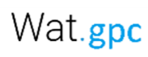

<nz-layout>
  <nz-header>
    <div class="logo">
      <p></p>
    </div>
    <ul nz-menu nzMode="horizontal">
      <li nz-menu-item nzMatchRouter>
        <a [routerLink]="['home']">Gestion des los</a>
      </li>
      <li nz-menu-item nzMatchRouter>
        <a [routerLink]="['operations']">Opérations sur lot</a>
      </li>
      <li nz-menu-item nzMatchRouter>
        <a [routerLink]="['Paramétrage']">Paramétrage</a>
      </li>
    </ul>

  </nz-header>
  <nz-content>


    <div>


      <router-outlet></router-outlet>

    </div>
  </nz-content>
  <nz-footer></nz-footer>
</nz-layout>
